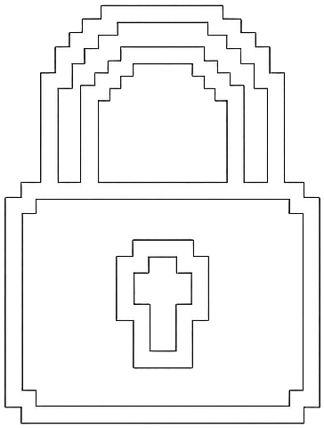

Turn on your webcam and watch yourself rendered as real-time ASCII art at ~10 FPS
All processing happens locally in your browser — no video data leaves your device. Grant camera permission to begin.
Click the Capture button to snapshot the current ASCII frame. Downloads both a plain-text TXT file and a rendered PNG image with your current theme colors.
Set a 3, 5, or 10 second countdown timer. A large countdown overlay appears on the preview, then automatically captures when it reaches zero.
Record the live ASCII feed as a WebM video file. The ASCII art is rendered onto a hidden canvas at 10 FPS using your theme's accent color, then encoded in real time.

All processing happens in your browser. No video, images, or data is uploaded to any server. The camera stream is released the moment you click Stop.